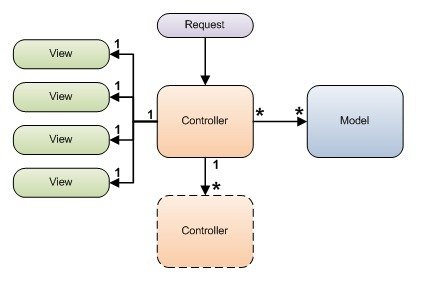
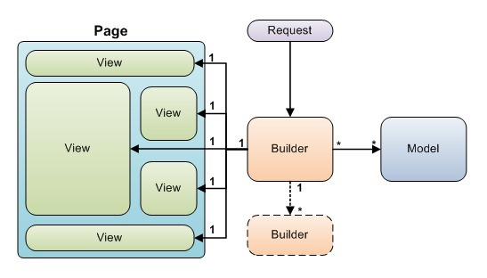
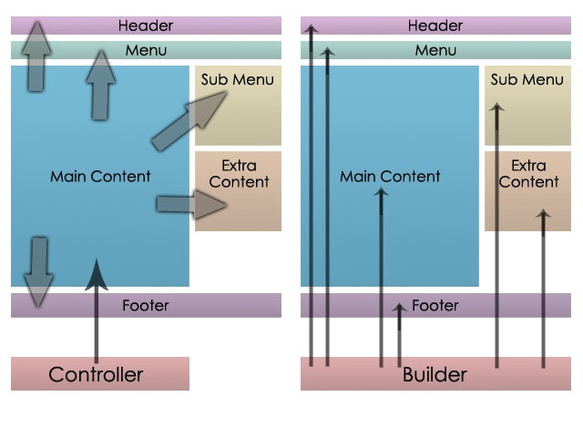
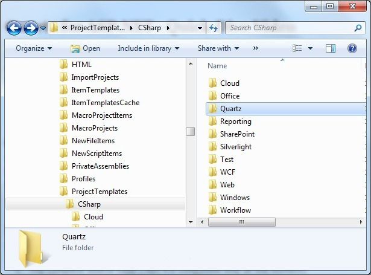
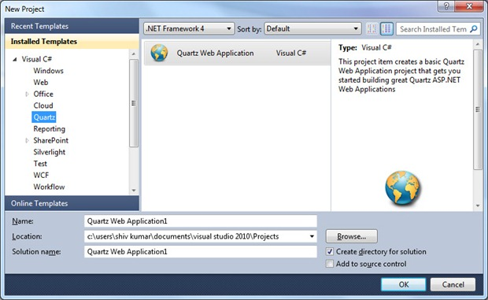
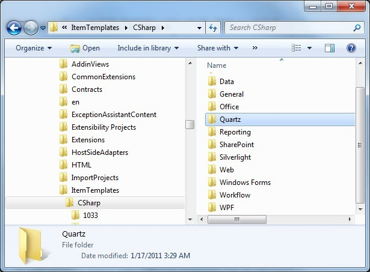
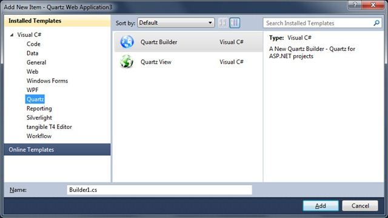

The genesis of Quartz for ASP.NET was what I felt were some Problems with ASP.NET MVC Framework Design. Quartz for ASP.NET can be used in conjunction with ASP.NET MVC or in regular ASP.NET WebApplication/Website projects (without any WebForms). It works the same either way.
Videos and Downloads
There are a few Videos in the Videos section below, that you may want to watch.
In the Downloads you can find the following:
- The Complete source code (.Net 4.0 compatible only at the moment)
- A Sample Project
- A New Quartz Project Item - for VS 2010
- A New Quarts Builder Item - for VS 2010
- A New Quartz View Item - for VS 2010
Quartz for ASP.NET is the most intuitive way to build dynamic web pages, using a powerful combination of class Composition and Inheritance. Today’s dynamic pages are rarely simple, so you need something that gives you more control over how your pages are composed. With Quartz for ASP.NET you continue to get the loose coupling and separation of concerns that the MVC design pattern provides and in addition you also get
- Loose coupling between Views and Template
- Templates are Html. That is there is no html+code OR code+html
- Views can be treated as real classes - inheritance/polymorphism and you write code in a.cs file
- Strong typing and F12 navigation
- Plug-able Websites/applications
However, the primary driver for Quartz for ASP.NET was the way in which you build pages in ASP.NET MVC and the problems with that design. Figure 1 below, shows the relationship and flow of control in the ASP.NET MVC design, between a Controller and a View, Partial View and Master Page/Layout Page.

Figure 1: ASP.NET MVC - relationship between a Controller and "views"
You'll notice that the process of building a page is akin to a chain reaction. That wouldn't be so bad if it weren't for the fact that the controller is not really controlling anything besides starting off a specific chain reaction (everything to the left of the Controller on the right in Figure1).
How Quartz for ASP.NET Works
Figure 2 shows the relationship and flow of control between the Builder and the Views and Master Page Template.

Figure 2: Quartz for ASP.NET - relationship between a Builder and Views
In Quartz for ASP.NET you use composition to build your pages. That is, a page is a composition of multiple View objects. TheBuilder orchestrates the entire composition. The way it works is this: - The Builder picks a Master Template (an Html file). This template usually has spots that need to be filled in, as shown in Figure 2 above, the "Page"
- It then picks the appropriate views for each of these spots (a base class (of the Builder) could enlist some views to do the "common" parts and the descendant Builder could choose to override these choices)
- Since the Builder has access to instances of each of the views enlisted to render the page, it can talk directly to these views to hand them the data each of them will need to do their part.
- Again, since the Builder has access to views as objects instances it can treat views polymorphic-ally if required or use inheritance or both
- Once it has done the above, each of the views go off and do their part (generate html) and a page is produced.
- Since views are regular .NET classes you have the full might of the .NET framework at your disposal. And since their only job is to produce html in conjunction with the Request Context (of the current request) and the data they’ve been handed by the Builder, it’s totally up to you, how you do that. The Quartz framework does provide some options out of the box, and they are:
- Simply generate html using just code and data, writing directly to the output
- Use html templates (with placeholder tags – parser included with the framework) to render html directly to the output. This method has the added advantage that you have no html in code and templates can be re-used across multiple views and/or a view can use multiple templates or decide to use a different template conditionally
- Use any other mechanism to generate html, such as T4 Templates.
The code listing below is a sample of the code you'd write in a Builder's BuildPage() method.
Sample Code
protected override void BuildPage(HttpContextBase httpContext, object model) { var featuresAllPageViewModel = (FeaturesAllPageViewModel)model; TitleView.Title = "Quartz for ASP.NET - Features"; AdBoxTopView.BoxTitle = "Highlights"; AdBoxTopView.Model = featuresAllPageViewModel.AdBoxModel; RegisterView("Body", new FeaturesAllView(httpContext, this, featuresAllPageViewModel.Features)); } }
Composing Pages with Quartz for ASP.NET
Traditionally, web application frameworks work in a inside-out fashion. That is, when you field a request for a page, you’re really starting with the inner most part of the page and working your way out (by calling RenderAction or RenderPartial in MVC parlance). In Quartz for ASP.NET you start with a template and compose your page using multiple views. It’s really a lot more intuitive to think and work this way, than inside-out.

Figure 3: Quartz for ASP.NET - Composing Pages in an intuitive manner
More Features of Quartz for ASP.NET
- Since all templates are html, your designer can build templates using the html design tool of her choice, and both you and the designer can live an uncluttered life (no more html+code or code+html)
- Views are completely unaware of the Builder that enlisted them or any other Builders for that matter. In Quartz for ASP.NET, Views are the "leaf nodes". There is only one loosely coupled linkage, that between the Builder and the views it enlists.
- All the code you write is strongly typed so you get all the benefits of strong typing and the IDE can help you navigate your classes and methods (F12).
- Blazingly FAST!
Razor Views
In the Quartz framework, templates are really just html templates. This keeps your templates clean, reusable and designable by web designers. However, since the Razor syntax is so cool, there is an experimental RazorView that you can try out. At the moment the view template is compiled each time the view is rendered. I'm not sure this feature will go too far since it kind of goes against the grain. But it's there...Quartz for ASP.NET - Quick-Dive Video
In the video below I attempt to give you a really good overview of what the Quartz framework is and how you would use it. So please take a look at the video since not only will you get a really good sense of what Quartz for ASP.NET is but I'm sure a lot of your questions will be answered as well.
Quartz for ASP.NET - Data Binding
This is a short video that shows you how data binding works. We use theRepeater in this demo as well so you'll also get to see how the Repeater can be used along with templates.
Downloads
The downloadable .zip files contains the following files- The Complete source code (.Net 4.0 compatible only at the moment)
- A Sample Project
- A New Quartz Project Item - for VS 2010
- A New Quartz Builder Item - for VS 2010
- A New Quartz View Item - for VS 2010
Installing Project and Item Templates in VS.NET
If you've not installed project and item templates in Visual Studio before, please follow these steps:
Extract the files from the downloaded zip file to a temporary folder.
First we'll installed the Project Item Template.
- Locate the file called –
Quartz Web Application.zip - Navigate to the Visual Studio Project Templates (C#) folder. On my machine this folder is located at:
C:\Program Files (x86)\Microsoft Visual Studio 10.0\Common7\IDE\ProjectTemplates\CSharp\
- Create a folder called
Quartzunder theCSharpfolder as shown in Figure 4 below - Copy the
Quartz Web Application.zipinto this folder - Follow the steps listed in the Rebuilding the Visual Studio Cache section below in order to rebuild the VS.NET cache.
- Start Visual Studio (rebuild the cache first!) and create a new project.
- You'll notice a
Quartzfolder inInstalled Templatesree view on the left (as seen in Figure 5 below) and when you select it, you'll see the Quartz Web Application project item template and shown in Figure 5 below

Figure 4: Creating the Quartz Project Template folder

Figure 5: Quartz Web Application Project Item
The steps involved in installing the Item Templates in Visual Studio are similar to the steps we followed earlier for installing the Project Item Template. This time you need to create a folder under a different hive.
- You'll need to create a folder under the
ItemTemplates\CSharpfolder, which on my machine is: C:\Program Files (x86)\Microsoft Visual Studio 10.0\Common7\IDE\ItemTemplates\CSharp
- Like before, create a folder called
Quartzunder this folder as shown in Figure 6 below. - Copy the
QuartzBuilder.zipandQuartzView.zipfiles into this new folder - Rebuild the Visual Studio cache again using the steps listed in the Rebuilding the Visual Studio Cache section below.
- After you've done that, you'll see item templates for a Quartz Builder and Quartz View when you add an item to your Quartz Web Application project, as shown in Figure 7 below

Figure 6: Showing the Quartz folder under the ItemTemplates\CSharp folder

Figure 7: Showing the Quartz Builder and View items in the Add new Item dialog
Rebuilding the Visual Studio Cache
Once installed the item templates into VS.NET, you'll need to get Visual Studio to rebuild its cache. You do that by doing the following:
- Close all instances of Visual Studio
- Open a
Visual Studio Command Prompt(i.e. Start | All Programs | Microsoft Visual Studio 2010 | Visual Studio Tools | Visual Studio Command Prompt) - Execute the following command:
devenv /installvstemplates